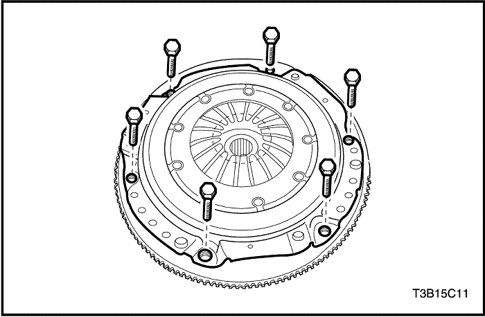
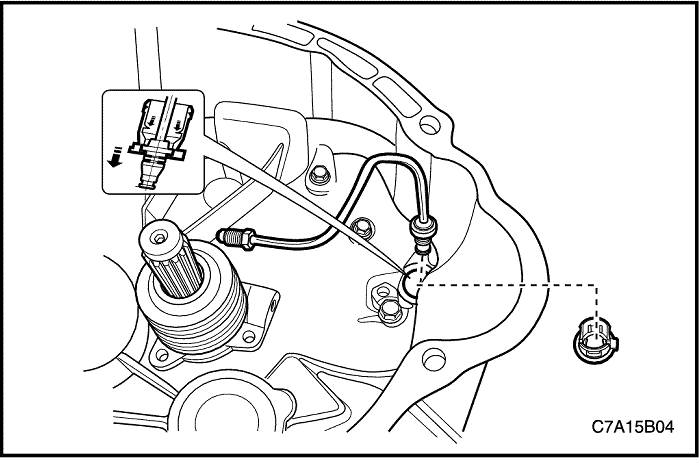

SECCIÓN 5C
EMBRAGUE
Precaución: Desconecte el cable negativo de la batería antes de desmontar o instalar cualquier unidad eléctrica o cuando exista la posibilidad de que una herramienta o equipo pueda entrar en contacto con bornes eléctricos expuestos. La desconexión de dicho cable ayudará a evitar lesiones personales y daños al vehículo. La llave de contacto debe estar en posición LOCK a menos que se indique lo contrario.
ESPECIFICACIONES
Especificaciones de apriete
Aplicación | N•m | Árbol de transmisión izquierdo | Articulación |
Tuerca del eje del pedal | 18 | 13 | - |
Tuercas del cilindro maestro del embrague | 23 | 17 | - |
Tornillos de fijación del cilindro esclavo concéntrico | 8~12 | - | 71~106 |
Tornillo de fijación del cilindro esclavo concéntrico al tubo de aceite del embrague | 16 | 12 | - |
Tornillos de fijación del plato de presión al volante motor (FAM II 2.4D) | 15 | 11 | - |
Tornillos de fijación del plato de presión al volante motor (2.0S DIESEL o HFV6 3.2L) | 28 | 21 | - |
DIAGNÓSTICO
Funcionamiento del embrague
Funcionamiento intermitente del embrague
Comprobaciones | Medida |
Compruebe si el conductor está manejando adecuadamente el vehículo. | Corrija el manejo del vehículo por parte del conductor según sea necesario. |
Compruebe si no hay suficiente aceite o hay alguna fuga en la tubería de presión. | Repare la fuga o añada aceite. |
Compruebe si el disco del embrague está deformado o desgastado. | Sustituya el disco del embrague (FAM II 2.4D). Sustituya el plato de presión nuevo y el disco del embrague nuevo (2.0S DIESEL o HFV6 3.2L). |
Compruebe si hay estrías desgastadas en el eje primario. | Repare o sustituya las estrías del eje primario. |
Compruebe si hay algún muelle de diafragma flojo. | Sustituya el plato de presión (FAM II 2.4D). Sustituya el plato de presión nuevo y el disco del embrague nuevo (2.0S DIESEL o HFV6 3.2L). |
El embrague patina
Comprobaciones | Medida |
Compruebe si el cilindro esclavo concéntrico está agarrotado. | Sustituya el cilindro esclavo concéntrico. |
Compruebe si el aceite del embrague retorna incorrectamente. | Realice una purga de aire. |
Compruebe si el disco del embrague está desgastado o si hay contaminación de aceite. | Sustituya el disco del embrague (FAM II 2.4D). Sustituya el plato de presión nuevo y el disco del embrague nuevo (2.0S DIESEL o HFV6 3.2L). |
Compruebe si el plato de presión está alabeado. | Sustituya el plato de presión (FAM II 2.4D). Sustituya el plato de presión nuevo y el disco del embrague nuevo (2.0S DIESEL o HFV6 3.2L). |
Vibración del embrague
Comprobaciones | Medida |
Compruebe si el volante motor está alabeado o sucio. | Repare o sustituya el volante motor. |
Compruebe si hay algún muelle de diafragma flojo. | Sustituya el plato de presión (FAM II 2.4D). Sustituya el plato de presión nuevo y el disco del embrague nuevo (2.0S DIESEL o HFV6 3.2L). |
Compruebe si el disco del embrague está manchado de aceite. | Sustituya el disco del embrague (FAM II 2.4D). Sustituya el plato de presión nuevo y el disco del embrague nuevo (2.0S DIESEL o HFV6 3.2L). |
Compruebe si hay estrías desgastadas en el eje primario. | Sustituya las estrías del eje primario. |
Pedal duro
Comprobaciones | Medida |
Compruebe si el eje del pedal del embrague no está bien lubricado. | Ponga grasa o repárelo. |
Compruebe si hay algún tubo obstruido. | Inspeccione o sustituya el tubo obstruido. |
Compruebe si el cilindro esclavo concéntrico está agarrotado. | Sustituya el cilindro esclavo concéntrico. |
Ruido en el pedal del embrague
Comprobaciones | Medida |
Compruebe si el casquillo del pedal del embrague no está suficientemente lubricado. | Lubrique el casquillo del pedal del embrague. |
Compruebe si algo estorba al muelle de recuperación del pedal del embrague. | Desmonte e instale el muelle de recuperación del pedal del embrague. |
LOCALIZADOR DE COMPONENTES
Componentes hidráulicos del embrague
- Pedal de embrague
- Anillo en E
- Casquillo
- Interruptor de posición del pedal del embrague
- Apoyo del pedal de embrague
- Eje del pedal
- Tuerca
- Muelle de retorno
- Cilindro maestro del embrague
- Tuerca
- Cilindro maestro del embrague
- Tuerca
- Clip
- Manguito del depósito
- Conjunto del tubo del cilindro de accionamiento del embrague
- Patilla
- Tubo del cilindro esclavo concéntrico
- Cilindro secunadario concéntrico
- Tornillo
MANTENIMIENTO Y REPARACIÓN
servicio con vehículo en marcha


Pedal de embrague
Procedimiento de desmontaje
- Desconecte el cable negativo de la batería.
- Desmonte la tuerca y el eje de fijación del pedal.
- Desconecte el muelle de retorno del anclaje de fijación.
- Desmonte el anillo elástico del pedal del embrague.
- Desmonte la varilla de empuje del pedal del embrague.
- Desmonte el pedal del embrague.
procedimiento de montaje
- Monte el pedal del embrague.
- Recubra la varilla de empuje con grasa para usos generales.
- Monte la varilla de empuje en el pedal del embrague.
- Monte el anillo elástico en el pedal del embrague.
- Recubra el eje de fijación del pedal con grasa para usos generales.
- Enganche el muelle de retorno al anclaje de fijación.
- Monte la tuerca y el eje de fijación del pedal.
Apretar
Apriete la tuerca del eje del fijación del pedal hasta 18 N• m (13 lb-pie).
- Conecte el cable negativo de la batería.
Interruptor de posición del pedal del embrague
Procedimiento de desmontaje
- Desconecte el cable negativo de la batería.
- Desenchufe el conector del interruptor.
- Desmonte el interruptor de posición del pedal del embrague.
procedimiento de montaje
- Monte el interruptor de posición del pedal del embrague.
- Enchufe el conector del interruptor.
- Conecte el cable negativo de la batería.
Purga de aire
Purgue el sistema hidráulico para extraer el aire que entró al desconectar los tubos para realizar reparaciones. Durante la purga del aire, el líquido en el depósito de líquido del embrague debe estar en el nivel MIN o por encima.
- Conecte un manguito de vinilo al tapón de purga. Coloque el otro extremo del tubo de vinilo dentro de un recipiente de cristal medio lleno con líquido de embrague.
- Comience a bombear lentamente el pedal del embrague varias veces.
- Mientras pisa el pedal del embrague, afloje el tornillo de purga hasta que empiece a salir el líquido. Cierre el tornillo de purga.
- Repita el paso 3 hasta que no haya burbujas de aire en el líquido.
- Llene el depósito con líquido de embrague hasta el nivel adecuado.

Plato de presión y disco del embrague (FAM II 2.4D)
Procedimiento de desmontaje
- Desconecte el cable negativo de la batería.
- Desmonte la caja de cambios del vehículo. Consulte la Sección 5B, Caja de cambios manual de cinco velocidades.
- Quite los tornillos del plato de presión y desmonte dicho plato.
Importante: Sujete el plato de presión cuando quite el último tornillo.

- Desmonte el disco del embrague del volante motor.
Procedimiento de inspección Disco del embrague
- Inspección visual
- Inspeccione si hay desgaste o contaminación de aceite en la superficie del embrague.
- Inspeccione si el muelle de torsión está dañado o flojo.
- Inspeccione si el disco del embrague está alabeado o doblado. Tras la inspección, sustituya el plato y el disco si fuera necesario.
- Inspección del disco del embrague
- Mida la profundidad de las cabezas de los remaches a partir de la superficie del disco del embrague.
- Sustituya el disco del embrague si el valor medido está por debajo del límite.
- Profundidad de las cabezas de los remaches (límite): 1,1 mm (0,043 pulg.)

Procedimiento de inspección Plato de presión
- Compruebe si hay algún dedo de muelle de diafragma desgastado.
- Compruebe si la superficie del plato de presión está agrietado o desgastado.
- Compruebe si la cara está contaminada con aceite. Tras la inspección, sustituya el plato de presión si fuera necesario.

procedimiento de montaje
- Recubra las estrías del disco del embrague con grasa para usos generales.
- Alinee el plato de presión y el disco del embrague con el volante del motor mediante la herramienta adecuada.
- Ponga los tornillos del plato de presión.
Apretar
Apriete los tornillos hasta 15 N•m (11 lb-pie).
- Monte la caja de cambios en el vehículo. Consulte la Sección 5B, Caja de cambios manual de cinco velocidades.
- Conecte el cable negativo de la batería.
Plato de presión y disco del embrague (2.0S DIESEL o HFV6 3.2L)
Procedimiento de desmontaje
- Desconecte el cable negativo de la batería.
- Desmonte la caja de cambios del vehículo. Consulte la Sección 5B, Caja de cambios manual de cinco velocidades.
- Quite los tornillos del plato de presión y desmonte dicho plato.
Importante: Sujete el plato de presión cuando quite el último tornillo.
- Desmonte el disco del embrague del volante motor.
Procedimiento de inspección Disco del embrague
- Inspección visual
- Inspeccione si hay desgaste o contaminación de aceite en la superficie del embrague.
- Inspeccione si el muelle de torsión está dañado o flojo.
- Inspeccione si el disco del embrague está alabeado o doblado. Tras la inspección, sustituya el plato de presión nuevo y el disco del embrague nuevo si fuera necesario.
- Inspección del disco del embrague
- Mida la profundidad de las cabezas de los remaches a partir de la superficie del disco del embrague.
- Sustituya el plato de presión nuevo y el disco del embrague nuevo si el valor medido está por debajo del límite.
- Profundidad de las cabezas de los remaches (límite): 1,2 mm (0,047 pulg.)
Procedimiento de inspección Plato de presión
- Compruebe si hay algún dedo de muelle de diafragma desgastado.
- Compruebe si la superficie del plato de presión está agrietado o desgastado.
- Compruebe si la cara está contaminada con aceite. Tras la inspección, sustituya el plato de presión nuevo y el disco del embrague nuevo si fuera necesario.
procedimiento de montaje
- Recubra las estrías del disco del embrague con grasa para usos generales.
- Alinee el plato de presión y el disco del embrague con el volante del motor mediante la herramienta adecuada.
Importante: Al sustituir el plato de presión o el disco del embrague, sustituya tanto el plato como el disco por otros nuevos.
- Ponga los tornillos del plato de presión.
Apretar
Apriete los tornillos hasta 28 N•m (21 lb-pie).
- Monte la caja de cambios en el vehículo. Consulte la Sección 5B, Caja de cambios manual de cinco velocidades.
- Conecte el cable negativo de la batería.
Conjunto de cilindro maestro de embrague
Procedimiento de desmontaje
Antes de desconectar el manguito del depósito, vacíe el líquido de embrague del depósito.
- Desmonte el clip de bloqueo del pedal del embrague.
- Desmonte la varilla de empuje del pedal del embrague.
- Desenganche la abrazadera del manguito del cilindro maestro.
- Desconecte el manguito del cilindro maestro.
- Desmonte el tubo del cilindro maestro.
- Quite las tuercas del cilindro maestro del embrague.
- Desmonte el cilindro maestro del embrague.
procedimiento de montaje
- Monte el cilindro maestro del embrague con sus tuercas.
Apretar
Apriete las tuercas del cilindro maestro del embrague hasta 23 N•m (17 lb-pie).
- Conecte el tubo al cilindro maestro.
- Conecte el manguito del cilindro maestro.
- Enganche la abrazadera del manguito en el cilindro maestro.
- Monte la varilla de empuje en el pedal del embrague.
- Monte el clip de bloqueo en el pedal del embrague.
- Purgue el aire. Consulte el apartado "Purga del aire" de esta sección.
- Llene el depósito con líquido de embrague hasta el nivel adecuado.

Cilindro secunadario concéntrico
Procedimiento de desmontaje
- Desmonte la caja de cambios del vehículo. Consulte la Sección 5B, Caja de cambios manual de cinco velocidades.
- Quite los tornillos de fijación del cilindro esclavo concéntrico.
- Desconecte el tubo del cilindro esclavo concéntrico de dicho cilindro.

Importante: Cuando desmonte el casquillo, no lo haga con demasiada fuerza.
- Quite el casquillo del tubo del cilindro esclavo concéntrico.
- Retire el tubo del cilindro esclavo concéntrico.

- Desmonte la junta tórica y el cilindro esclavo concéntrico.
procedimiento de montaje
- Instale la junta tórica y el cilindro esclavo concéntrico.

- Tras colocar provisionalmente el tornillo del tubo, apriete los tornillos de fijación del cilindro esclavo concéntrico.
Apretar
Apriete los tornillos de fijación del cilindro esclavo concéntrico hasta 8-12 N•m (71-106 lb-pulg.).
- Apriete el tornillo del tubo.
Apretar
Apriete el tornillo del tubo hasta 16 N•m (12 lb-pie).

- Coloque el casquillo en el tubo del cilindro esclavo concéntrico.
- Monte la caja de cambios en el vehículo. Consulte la Sección 5B, Caja de cambios manual de cinco velocidades.
REPARACIÓN DE LA UNIDAD
Cilindro maestro del embrague
procedimiento de desmontaje (desarmado, desensamble, desensamblaje)
- Desmonte del vehículo el conjunto del cilindro maestro del embrague. Consulte el apartado "Conjunto del cilindro maestro del embrague" de esta sección.
- Retire la funda guardapolvo y desconecte el aro tope del pistón utilizando unos alicates para anillos elásticos.
- Desmonte el conjunto de la varilla de empuje y el conjunto del pistón.
Procedimiento de montaje (armado, ensamblaje)
- Aplique líquido limpio a las copelas del conjunto del pistón e inserte este conjunto y el conjunto de la varilla de empuje en el cuerpo del cilindro maestro.
- Monte el aro tope del pistón con la ayuda de unos alicates para anillos elásticos. Ponga el guardapolvo.
- Monte el conjunto del cilindro maestro del embrague en el vehículo. Consulte el apartado "Conjunto del cilindro maestro del embrague" de esta sección.
DESCRIPCIÓN GENERAL Y FUNCIONAMIENTO DEL SISTEMA
Piezas motrices
Los elementos conductores constan de dos superficies planas mecanizadas y de acabado suave. Uno de estos elementos es la cara trasera del volante motor y el otro es el plato de presión. El plato de presión va montado en una cubierta de acero sujeta al volante motor mediante tornillos.
Piezas conducidas
El elemento conducido es el disco del embrague que dispone de un cubo estriado. El cubo estriado puede deslizarse a lo largo de las estrías del eje primario, y con las que realiza el accionamiento de dicho eje.
Los elementos conductores y conducidos se mantienen en contacto por la presión de los muelles. Esta presión se ejerce mediante un resorte de diafragma situado en el conjunto del plato de presión.
Elementos del funcionamiento
El sistema de desembrague consta de pedal del embrague, cilindro maestro y cilindro esclavo concéntrico.
A diferencia del anterior sistema de desembrague mediante palanca y horquilla, el sistema con cilindro esclavo concéntrico hace que éste desembrague directamente por la presión que se genera al pisar el pedal del embrague.